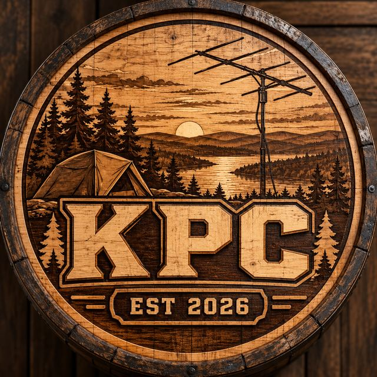

KPC PARK TRACKER
KENTUCKY PARK TRACKER
Enter a callsign to see which of Kentucky's POTA parks it has activated — on a map, park by park — plus the KPC club leaderboard.

KENTUCKY PORTABLE CLUB
KPC Leaderboard — Kentucky Parks
Load the leaderboard to rank KPC members by unique Kentucky parks activated.
Counts come from POTA's public activation records for the 186 Kentucky parks in the KPC guide. A park counts as activated with 10 or more QSOs in one activation. Data is saved in your browser for 12 hours. Hunted parks are only shown if you load your own file.